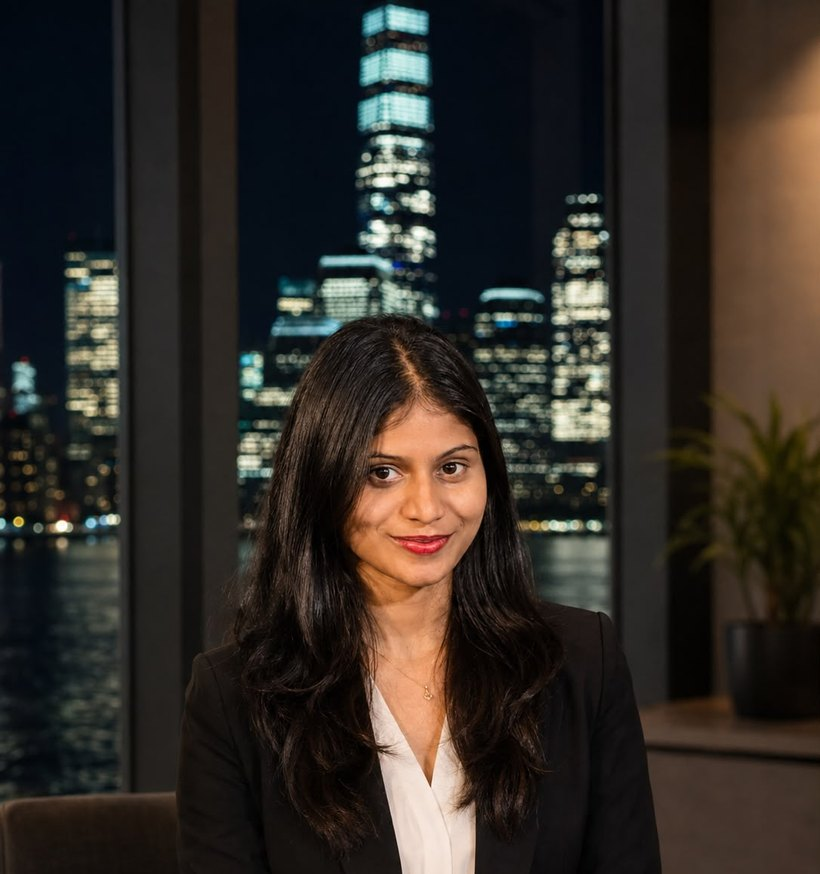

I build machine learning models that produce interpretable, reliable results — and communicate what the numbers actually mean to the people who act on them.
Data scientist with 3+ years of experience applying machine learning and statistical analysis to structured business data — building regression, classification, and forecasting models that produce interpretable, reliable results tied to real decisions. Strong in feature engineering, model evaluation (cross-validation, SHAP, ROC-AUC), A/B testing, and communicating model outputs to stakeholders without a modeling background. Currently a Graduate Data Scientist at Huntington National Bank, and completing an M.S. in Computer Science (GPA 3.90) at Governors State University.
Credit risk classification platform over large record volumes — gradient boosting models (XGBoost) trained on structured financial features, evaluated with precision/recall and ROC-AUC, with SHAP explanations that make model decisions readable for risk and compliance teams.
Demand forecasting pipeline built with scikit-learn and time-series feature engineering — lag features, rolling statistics, seasonality encodings — with cross-validation over temporal splits and RMSE-based model selection appropriate for forecasting contexts.
A statistical experimentation platform that designs A/B tests, calculates required sample sizes and power, tracks runtime, and reports results with confidence intervals and effect sizes — so findings can be acted on with statistical confidence, not just directional instinct.
An ML experiment tracking and model evaluation system built on MLflow — logging hyperparameters, metrics, and artifacts across runs, comparing iterations systematically, and providing a model registry that makes the path from experiment to deployment reproducible and auditable.
Open to Data Scientist roles. Happy to talk about modeling approaches, feature engineering, or how to communicate model results to people who don't speak statistics.